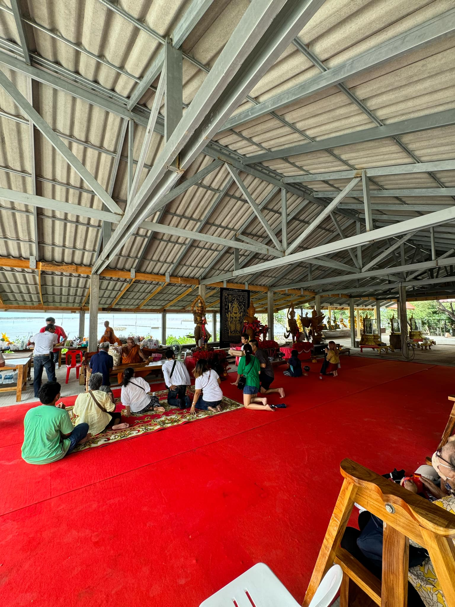

วัดขุนสมุทรจีน
วัดขุนสมุทรจีน หรือวัดขุนสมุทราวาส ตั้งอยู่บ้านขุนสมุทร หมู่ที่ 9 ตำบลแหลมฟ้าผ่า อำเภอพระสมุทรเจดีย์ สร้างขึ้นเมื่อวันที่ 17 กรกฎาคม พ.ศ. 2510 โดยนายประเทือง เจริญนาค และผู้ใหญ่หั่น เข่งสมุทร วัดขุน สมุทราวาสเป็นวัดที่ติดกับปากอ่าวทะเลและล้อมรอบด้วยน้ำทะเล ด้วยความที่พื้นดินบริเวณรอบวัดถูกน้ำทะเลกัดเซาะจนพื้นดินหายไป ทำให้พื้นด้านล่างของวัด โบสถ์ และกฏิจำเป็นต้องยกให้สูงขึ้น เพื่อไม่ให้น้ำทะเลกัดเซาะจนพังลง
Back
